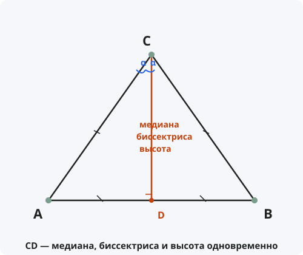

Совпадение медианы, биссектрисы и высоты
Формулировка
В равнобедренном треугольнике медиана, биссектриса и высота, проведённые к основанию, совпадают.
Обратно: если в треугольнике медиана, биссектриса и высота, проведённые к одной стороне, совпадают (любые две из них), то треугольник равнобедренный.
Обозначения
Пусть дан равнобедренный треугольник ABC, в котором AC = BC.
AB — основание треугольника.
CD — отрезок, проведённый из вершины C к основанию AB (точка D лежит на AB).
Тогда CD одновременно является:
• Медианой — D делит AB пополам: AD = DB
• Биссектрисой — ∠ACD = ∠BCD
• Высотой — CD ⟂ AB

Доказательство (прямое)
Таким образом, биссектриса CD одновременно является медианой и высотой. Теорема доказана.
Доказательство (обратное — совпадение медианы и высоты)
Аналогично доказываются другие комбинации (медиана + биссектриса, высота + биссектриса).
Следствия из теоремы
- В равнобедренном треугольнике все три «замечательные линии» к основанию совпадают.
- Центр вписанной окружности, центр описанной окружности, ортоцентр и центроид в равнобедренном треугольнике лежат на одной прямой — оси симметрии.
- Если в треугольнике медиана совпадает с высотой, то треугольник равнобедренный.
- Если в треугольнике биссектриса совпадает с медианой, то треугольник равнобедренный.
- Если в треугольнике биссектриса совпадает с высотой, то треугольник равнобедренный.
- В равностороннем треугольнике все три медианы, биссектрисы и высоты совпадают попарно.
Примеры применения
Пример 1. В треугольнике ABC медиана CD перпендикулярна основанию AB. Докажите, что треугольник равнобедренный.
Решение: Медиана, перпендикулярная стороне, является высотой. По обратной теореме, треугольник равнобедренный с основанием AB.
Пример 2. В равнобедренном треугольнике основание равно 10 см, боковая сторона 13 см. Найдите длину медианы к основанию.
Решение: Медиана к основанию совпадает с высотой. По теореме Пифагора: h = √(13² − 5²) = √(169 − 25) = √144 = 12 см.
Пример 3. В треугольнике ABC проведена биссектриса CD, которая делит основание AB пополам. Докажите, что треугольник равнобедренный.
Решение: По условию, биссектриса совпадает с медианой. По обратной теореме, треугольник равнобедренный (AC = BC).
Историческая справка
Свойство равнобедренного треугольника, что медиана, биссектриса и высота к основанию совпадают, было известно ещё в Древней Греции.
Евклид в «Началах» (Книга I, Предложения 5 и 6) доказывает эквивалентность равенства сторон и равенства углов, из чего напрямую следует совпадение этих линий.
Эта теорема широко используется в задачах на построение и является одной из ключевых в школьном курсе геометрии.
Интересные факты
- Ось симметрии равнобедренного треугольника — это и есть та самая линия, в которой совпадают медиана, биссектриса и высота.
- Совпадение этих трёх линий — уникальное свойство равнобедренного треугольника (и равностороннего как частного случая).
- В архитектуре и строительстве это свойство используется для проверки симметричности конструкций.
- В оригами сгиб, совпадающий с осью симметрии равнобедренного треугольника, одновременно является и биссектрисой, и медианой, и высотой.
- Теорема о совпадении медианы, биссектрисы и высоты — пример «красивого» геометрического факта, где несколько понятий сливаются в одно.